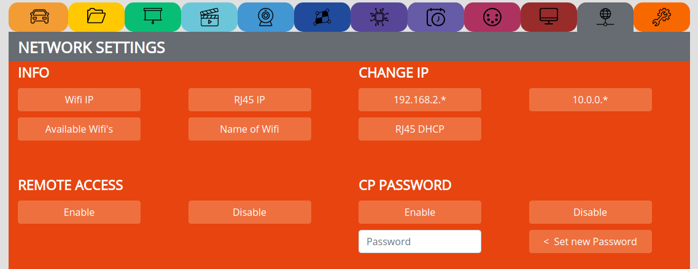
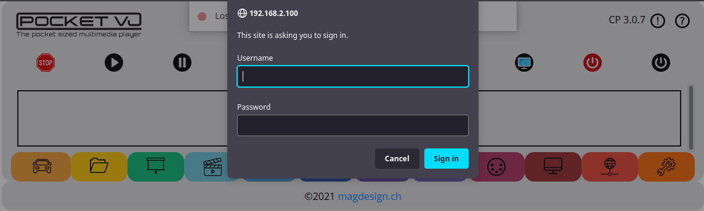
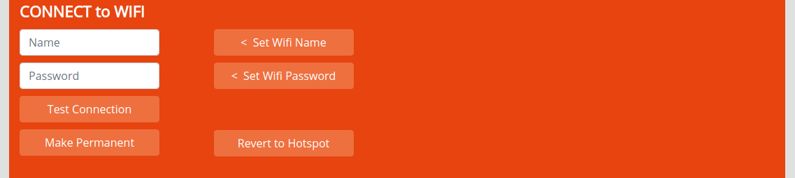
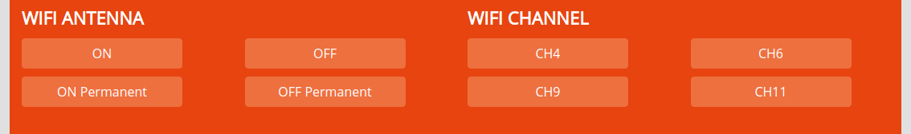
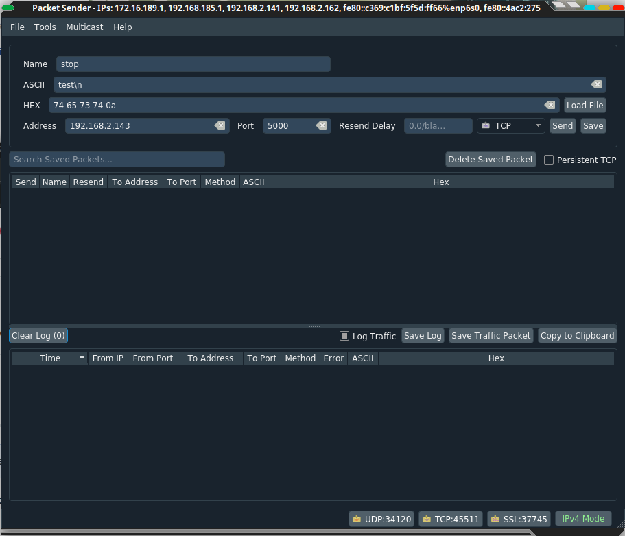

NETWORK SETTINGS¶
INFO¶
CHANGE IP¶
192.168.2. => Sets the ip range to 192.168.2.*** (reverts from dhcp)
10.0.0.0. => Set the ip range to 10.0.0.0.*** (reverts from dhcp)
RJ45 DHCP => Sets the rj45 connection to dhcp to get the ip address from a router
Note
The Wifi IP will always stay the same!
REMOTE ACCESS¶
see video tutorial: https://video.pocketvj.com/AVideo/video/3/pocketvj-exhibition-access-from-everywhere-over-the-internet
CP PASSWORD¶
Used to lock the Control Panel and the content with a password.
Username: admin
Pass: 12345
Enable => Enables the CP password
Disable => Disables the CP password
Entry Filed => Set your own password
CONNECTING TO WIFI¶
Used to connect to an in house Wifi with internet so you can accesss from anywhere.
see video tutorial: https://video.pocketvj.com/AVideo/video/11/pocketvj-exhibition-wifi-connecting
WIFI ANTENNA¶
Enable or disable the internal wifi
ON => Turns wifi on
ON Permanent => Turns wifi on also after reboot
OFF => Turns wifi and bluetooth off until next reboot
OFF Permanent => Turns wifi and bluetooth off forever
WIFI CHANNEL¶
Change Wifi channels, useful when using multiple PocketVJ’s in public spaces to split up the frequencies.
UDP Control¶
You can control the PocketVJ with UDP commands. On port 5000
Uppercase and lowercase matters!
When using Packetsender or similar, make sure to send a “Newline” after every command,
e.g: stop\n
see here: https://docs.allthingstalk.com/developers/api/udp-messaging/
The commands are defined in: https://github.com/magdesign/PocketVJ-CP-exh/blob/master/sync/commandmapping.sh
Ask if you need more control commands and I will add them or edit the file by yourself.
TCP Control¶
You can control the PocketVJ with TCP commands.
Standard port for http:// commands is port 80
Its your decision which tool you use to send the commands, here is an example using curl via terminal to control a PocketVJ with the IP: 2.0.0.100
curl -s http://2.0.0.100/backend.php/?action=stop
IP://X.X.X:X/backend.php/?action=…………..
For more commands check backend.php Every function is controllable via TCP!